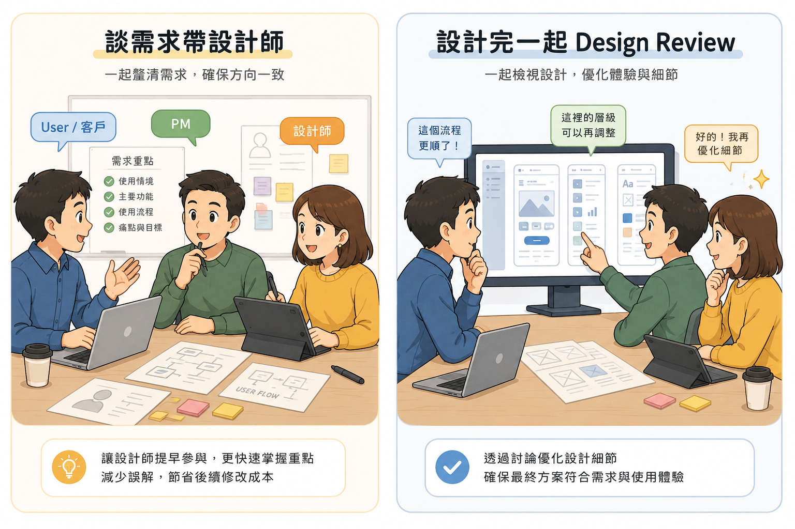
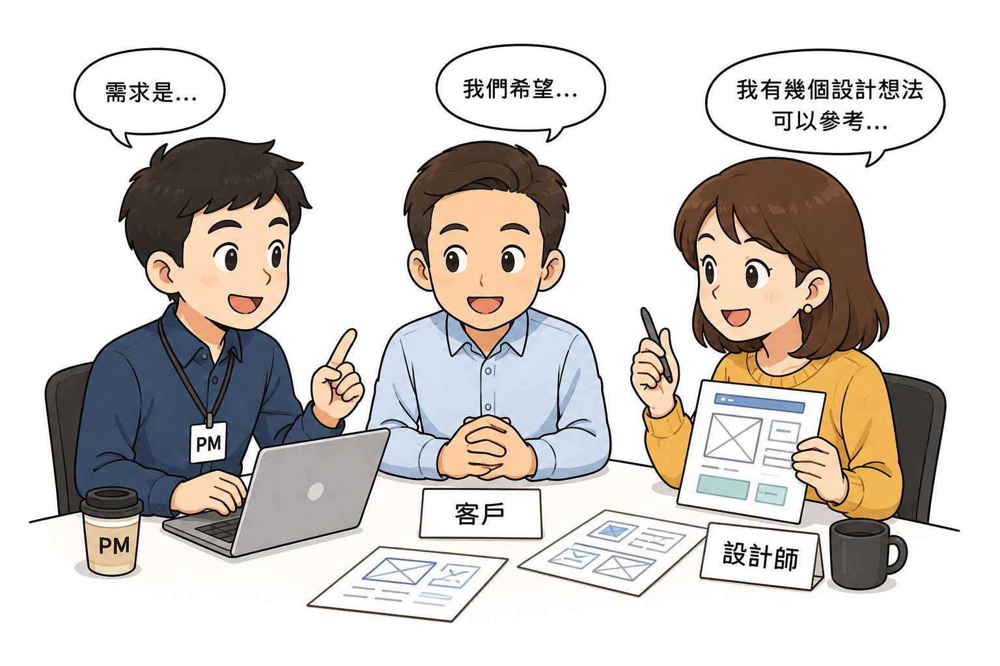

問題
User 口頭反饋被譯成設計指令，方向過早鎖死，真正問題未釐清。
解法
帶設計師面談；現場釐清問題類型；用 Demo／減法驗證，必要時 STOP。
成果
案例顯示：字太小實為配色、看不到重點用減法、不當需求被當場攔下。
- 案例顯示：看似「字太小」實際是配色問題，調完回到原設計配色
- 「看不到重點」用減法收納資訊，而非只放大文字
- 「三版型三顏色」從 12 稿收斂為 3 個合理組合
- 不當的手機 Filter 外提需求被現場攔下，避免破壞體驗
視覺敘事


